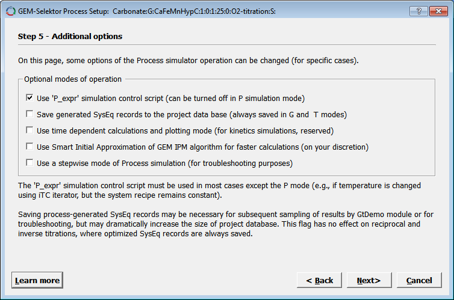
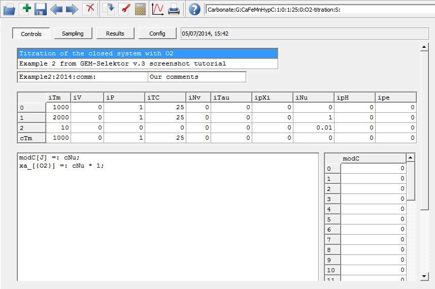

Previous Page Back to Start Page
(23) How
to create
your first Process Simulator.
In Gem-Selektor Main Window, in Equilibria Mode, click at the "Process"
icon on the left side (or use "Modules" "Process" menu command) to open
the (still empty) Process
window. There, click on the "Create a new record from scratch" (or execute
the "Record" "Create(New)" menu command). This will
bring you into a "Parent System selection" dialog (shown below).

In the above
dialog, select (as shown) the "parent" chemical system (SysEq record) that
you have
prepared before, and click "Ok" to
proceed. The following small dialog appears now (with asterisks
in the two last fields):

The first
eight fields of the Process record key (not editable) are identical with
that of the
"parent" SysEq
record key. Indeed, the program uses that to immediate record to load the
"parent" system each time when the Process record is loaded from the
database.
You have to
fill
out the last two fields: "O2-titration" identifies the process
simulator
to be created, and "S" indicates that this will be a simple (straightforward)
change
of the bulk composition, as shown above.
Click "Ok"
when finished. This will get you to a Process Setup Wizard:

The wizard
consists of several pages that can be accessed by clicking on the "Next
>" or "< Back" button. Each page contains some explanations
important for setting up the process simulator properly (the explanations
may be
changed from version to version).
There is nothing to change on the first wizard page, so click "Next >" switch to the second one - Step 2.
The first iterator iTm defines
how the program will number the generated system definitions (CSD). If we
start with CSD #1000 and will produce 101
points then we will end up with CSD #2000 at increment 10. Please, edit
the iterator accordingly.
Pressure (1 bar) and temperature (25 C) will be kept constant, so there
is nothing to change in the iP
and iTC iterators. The
iNv iterator should usually be set the same as the last
field of the "parent" SysEq record key, i.e. 0, 0, 0.
The iNu iterator should contain the range ( 0 to 1 g) and the
linear increment (0.01 g) for additions of the titrant O2 to bulk
composition of the
parent system. Check that the process type is set as "Titration cNu
(linear)", as shown below.
Click on the "Compos" property and select "O2" as a titrant. The automatically created Process control script will be visible at the right-hand side:

Click "Next >" to proceed to Step 3 of the Process Wizard, which is very helpful to create the Process sampling script aimed at collecting and plotting the simulation results.

"Important Dimensions" and change the first
field (nPV Number of steps to be generated) to 51 and the third field
(Number of plots...) to 5, as shown below:

The idea is to collect
calculated values of CaAQ, FeAQ, MnAQ,
-pH and pe at each of 51 simulation points and plot them.
Click "Next >" to
proceed to the third wizard page, which contains some additional
settings (for advanced users). Check that the selections look like
shown below:

Press "Next >" now to see the last wizard page which contains explanations about how the process simulator works. On that page (not shown here), set the number of links to bibliography SDref records to 1; read the explanations, and click "Finish" when ready. A Page 1 of the "Process" window will appear; as usual, fill out the first two comment fields e.g. as shown below.

You can also type in the
third row a reference to your comments or bibliography link ("Example2:2005:comm:"
as shown above).
If you click on that field
later
and press F2, you will see a SDref window where
you
can type your comments (on Page 2) and save the SDref record to
database. When you press (in the Process window page) F2
on the pSDref
field next time, your
comments
will pop up as they have been saved last time; you can change or extend
them and save again,
and so on.
Next, we will finalize and
run the Process Simulator.